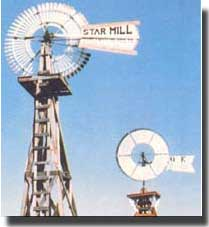
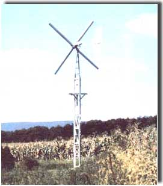
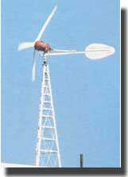
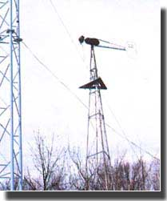

Go on a Great Plains energy-independence "treasure hunt".
There's been a lot of talk (some of it, unfortunately, quite loose) about restoring old wind chargers ... most notably the Jacobs generators that achieved some fame prior to the formation of the Rural Electrification Administration (REA) in 1935. Most such discussions, however, fail to mention where to find a rebuildable machine in the first place. (After all, not everyone is fortunate enough to have an old Jacobs sitting out in the barn gathering dust!)
However, if you happen to be driving across the Great Plains, you may well have a chance to take possession of a beautiful, potentially functional piece of Americana. And the tips we've garnered from our experience in the used wind machine business will help prevent you from getting ripped off in the process.
The winds that sweep down out of the Rockies and across the Great Plains are notorious. Their power often rakes the rich topsoil from the earth, kicks it skyward, and carries it across the continent ... where it rains down on distant eastern cities.
But for a few years, spanning the dark days of the Depression, this wind was occasionally put to work. It helped connect far-flung farmers and ranchers with the outside world ... as they and their families huddled around crackly-sounding Philco radios, to find reassurance in the "fireside chats" of Franklin Roosevelt and entertainment in the verbal antics of Fred Allen and Jack Benny.
Rural folks, you see, could get lighting from the traditional kerosene lamps-and propane refrigerators brought modern food storage to the farm-but radios depended on the constant flow of electrons that many people now take for granted.
And during the Depression, Great Plains homesteads had access to electrical power only through the use of batteries or on-site generation. Storage batteries ran down, though, and had to be taken into town for recharging ... a procedure which often cost more money and time than country folk had to spare in those hard years. Of course, gasoline-powered generators were available, but fuel prices put them out of reach of all but the most prosperous individuals. Therefore, it was massproduced wind generators-dotting the landscape with vanes and towers-that created most of the electricity used in remote areas of the Plains.
Modem homesteaders (or homeowners) face some of the same economic problems as did their forebears of 40 to 50 years ago. In addition, today's growing interest in all forms of alternative energy sources has created a demand for low-cost wind generators that has yet to be met by modernday manufacturers.
Well, these conditions have combined to create a mini-industry composed of professionals (and some just plain independentminded cusses) who track down the aging wind machines across the vast Midwest and High Plains ... either for their own use or to market to buyers who recognize quality workmanship. It's a business that can be both lucrative and enjoyable.
As you likely know, these machines are available as a result of yet another "child" of the Great Depression: The REA, which brought federally subsidized power to remote homesteads (although some parts of the country weren't electrified until the early 50's). The REA allowed rancher after rancher to abandon the wind systems, and-once such individuals were tied into the grid-they often sold their machines for scrap ... passed them along to nonelectrified homesteads ... or simply let them stand in the face of the harsh elements.
An estimated 50,000 wind chargers were in circulation as late as 1950. And approximately 2,000 of the machines are once again (or are still) in use. In most cases, these units provide supplemental power, but a sizable minority are their owners' sole sources of electricity.
The old-but still very practical-machines allow the average homesteader to eliminate the middleman and take control of the energy-acquisition process. In fact, finding and rebuilding such a unit can result in substantial savings and personal satisfaction, However, there are pitfalls to be avoided.
First, you should know that all of the easyto-reach areas have long since been picked clean of good machines by the pros. If you spot a wind charger near a paved highway, its owner probably couldn't be hornswoggled out of it by P.T. Barnum! Therefore, your best bet will be to choose a promising, off-the-beaten-track area in which to search.
Several factors come into play here. Those who sold their windplants often did so to more remotely situated ranchers who were reached by the REA much later. And since these ranchers were in a buyers' market-with a great many machines suddenly up for salethey could purchase the best ... usually the Jacobs, which is justifiably called the "Cadillac" of wind generators.
How does one go about finding an area worth searching? Well, the same rule holds for locating a jumping-off site as in looking for a specific wind machine: The more remote the region, the better the chances of success.
Once you find a suitably isolated locale (keep in mind that major towns along the railroad lines were electrified before the advent of the wind chargers), talk to the people who might know the whereabouts of available units: farm machinery dealers, service people at the local REA co-op, gas station attendants, and hardware and appliance merchants ... or even the crowd at the corner tavern. Then work up a list of prospects and canvass them by phone. Another, more difficult, way to conduct your search is to cruise the roads with a pair of binoculars and a map. In some cases, though, there won't be any roads to the abandoned homesteads that might harbor your quarry. And, remember, getting to a site is only half the battle ... you still have to get back out, possibly with a 600-pound wind machine clanging around in the truck bed!
Good maps are, of course, essential to mark the location of a wind charger should the owner not be there ... and do keep in mind that there's always an owner! just because a site looks abandoned in no way means that it is. Respect property rights, or we'll be reading about you in the Sunday papers. (In Montana, taking a wind generator without permission isn't quite as heinous a crime as stealing horses, but it's always possible that an owner who catches such a thief in the act will be moved to administer instant justice!)
You'll find it useful to develop skill in being able to tell, at substantial distances, the difference between a windpowered water pump and a genuine wind charger, as well as in identifying the various makes of wind generators at a glance. (The photos accompanying this article will help a bit.)
The most common model, Wincharger, was known as the "Chevrolet" of wind machines. It's typically not as durable as the more expensive Jacobs unit, primarily because its design made it somewhat vulnerable in the face of extreme storm conditions. (As a matter of fact, it's not all that uncommon to find Winchargers on the ground ... in pieces.)
Salvageable Winchargers, however, are relatively easy to find, and you can often get them at bargain prices. Unfortunately, they're not the units to look for if you're seeking a machine to power your home, because the biggest model delivers only 1,500 watts from its 14'-diameter rotor. Such a machine could provide a worthwhile source of supplemental electricity, though ... especially if the price is right.
However, if you can hold out for a Jacobs generator, you'll likely not regret doing so. Before the demise of their company in the mid-50's, the Jacobs brothers produced 1, 500-, 1,800-, 2,800-, and 3,000-watt models. The first two generated 32-volt DC power ... the 2,800-watt version, either 32or 120-volt DC (depending on the model) ... and the 3,000-watt version, 120-volt DC.
Once you've found a generator and an owner who's willing to sell, you may want to use the following guidelines to help determine how much to offer.
First, if the turbine is still on the tower, consider that safely removing it from that ancient structure will be no small feat. If the generator is already down, take a parts inventory. (Should something be missing, it may have been tucked away in a cluttered toolshed, so check with the owner.) This could save you a lot of trouble and money, since machining new parts is expensive and timeconsuming.
Your next job will be to determine where the blades (if they're still around at all) have been stored. New "props" are costly, but weather-beaten ones may be unsalvageable. If the blades for your find appear relatively new, consider yourself way ahead of the game. With that taken care of, go on to check the wiring. Be aware that a few mouse droppings or a birds' nest doesn't rule out sound wiring, so take a close look. When you've evaluated the condition of the machine, you'll have some idea of what it's going to cost you to restore it.
As a rule, any Jacobs is worth at least $ 100, while a fully rebuilt 3-KW model will bring a whopping $3,500. A machine on the ground in good shape is worth more than one on a tower. Furthermore, a 2,800-watt, 32-volt model is worth more than a 1,500- or 1,800-watt unit. This is partly because the larger model provides more power, but also because it can be rewound to generate 120 volts ... a useful attribute. And, since it doesn't need to be rewound, a 120volt Jacobs in good condition (which will be about as hard to track down as Bigfoot) can bring over $2,000 (as is) on the used generator market.
On occasion, you might be able to talk a rancher into selling the tower along with the generator, but that assembly's value-as a lightning arrester, TV antenna, or a source of scrap iron-makes this less than likely. If you can find a 40' or taller tower for $200, you've got yourself a real deal! However, not all such structures are created equal. If you've bought a Jacobs generator, buy a Jacobs tower, too.
The hard labor will begin once you've struck a fair deal. Getting a wind generator down off a tower is dangerous work, period. And since every situation is different, there's no chance to test your equipment under full load until the generator swings free. This is a task that requires pulleys, safety harnesses, hard hats, utility belts, ropes, a "gin pole" (generally an 11'-long steel pipe), at least 150' of high-quality, multistranded steel cable of 3/16" diameter or better, and a galaxy of other tools, along with a lot of adrenaline for those special moments when you're teetering 60 feet up in the air.
You'll also need a good bit more specific information than we're able to give here. And in our opinion, the place to get that instruction is Michael Hackleman's The Homebuilt, Wind-Generated Electricity Handbook, which is available at good bookstores (or can be ordered for $9.95 plus 95 cents shipping and handling from Mother's Bookshelf (restricted) , 105 Stoney Mountain Road, Hendersonville, North Carolina 28791). The volume has a detailed chapter on the mechanics of taking wind machines off and putting them on towers. This is required reading! Tower work should not be taken lightly!
Once the generator is down, you can either truck your ticket to free electricity back home or send it by commercial freight. If you decide to ship it, put all the major components in secure crates and label and box all the loose parts. Be sure, too, that the generator's shaft isn't exposed ... the crate should go around the entire machine. (We suggest that you do the packing job personally to see that it's done right.)
Jacobs generators are not especially difficult to restore, but their size does make them a tad unwieldy. A little familiarity with electric motors will be a big help to anyone tack ling a rebuilding job. In fact, if the generator's wiring is in good repair (and if the restorer is content to leave the unit at 32 volts DC), most of the work can be done by an average handyperson. The better part of the job involves replacing the brushes and bearings. (Again, Hackleman's book can help keep the project on line.)
Conversion to a 120-volt system, however will require the aid of a motor repair shop to rewind the generator ... which will cost several hundred dollars. Don't try to do the job by hand, though, or you may well end up with a pile of scrap wire.
Repairing the blades is simple ... if they're in reasonably good condition. Cracked props should be discarded. New blades (they'll run at least $300) are now made for Jacobs machines, and used ones are also available. You can find either through the classified sections of alternative energy publications.
Jacobs governors fall into two classes. The most common (and oldest) design is the "flyball" type, so-called because of its three weights (or flyballs). A reasonable price for such a governor is $ 100. The blade-activated governor, which was used only on the later models, is preferred by some folks because it's less expensive to manufacture and is thought to be more dependable. Satellite industries produce this governor and other Jacobs parts, such as tails, turntables, and control panels. (A new blade-activated governor retails for about $600.)
Of course, those of you who are too busy to hunt for abandoned wind machines can browse through the ads in alternative energy publications in search of rebuilts. (This will at least give the curious an idea of what the prevailing prices are.) Such a wind charger will usually cost about twice as much as would a do-it-yourself version. (If you do buy a rebuilt model, be sure to get a written guarantee of workmanship.)
Finally, if you're considering making an expedition through the Plains states in search of your very own wind charger, don't dally. Professionals are rapidly stripping the area of these treasures. Now's the time to stake out a claim to energy independence.
|
 Old water-pumping windmills are still abundant, but they're not what you're looking for |
 An author-rebuilt Wincharger, a powerplant tha comes in both two- and four-blade models . |
 This is a rebuilt Parris-Dunn of pre-REA days a design that has recently been reintroduced by Vermont's Northwind Power Company. |
|
 Here's the ""Cadillac"" of wind machines, a reliable old Jacobs . |
|
|